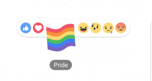
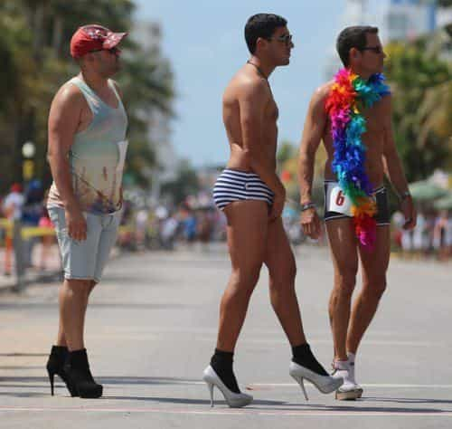

"You know, walk the earth, meet people... get into adventures."


Facebook has rolled out a bunch of new things to help people celebrate Gay Pride Month this June. The most degenerate addition is a “pride reaction” which adds a little rainbow ball to the other five standard reaction choices. The button is only active if you show active approval for homosexuals on the site.
The gay reaction is unlocked if you go to the LGBT Facebook page and like it (don’t rush all at once now). This then will supposedly give you the gay like buttons and probably put other gay things into your news feed.
If you live in a country that is not down with the gay, then you are out of luck, because Facebook doesn’t give gay likes for anyone with an intolerant IP address.

The only good thing about the left is that they have less attention span than a squirrel. After the next Islamic terrorist attack, Facebook may add the ISIS flag so we can like that too.

Establishing a pride month for the gays is legitimizing them as if they’re black. It’s a savvy move by the gay community to adopt everything that isn’t heterosexual, monogamous sex as part of their movement under the ever-increasing umbrella of their rather clunky acronym.
This may backfire upon them if they over-extend their relevancy by endorsing the next big thing like pederasty or bestiality, but, for now, their strategy seems to suck up everyone who isn’t completely straight in the head.

I wish…
Since America has been a primarily Christian country since it got started, many things, like Jewish pornography and Satanism, exist solely to bash on it. Supposedly the gay rainbow flag represents a lot of things, but the rainbow was originally God’s promise that He would not ever flood the earth again after the great flood. Seems like it’s part of the gay M.O. to pervert religious symbols.
I’m a fairly tolerant person. I’ve got no issue with a dude liking another dude; I’ve even got no issue with two dudes, or two women, living together. I really don’t have any issue with them receiving the same benefits under the law as married people.
But why do they have to spread their degeneracy to everyone, including children? Don’t they understand that those kids will never, ever be normal and they won’t have the choice to “go gay” like they did? Do they hate Western culture so much that they would drop the birth rate so far below the replacement rate that Islam can just waltz right in in two generations, throw them off the nearest rooftop, and set up a caliphate?
While Facebook giving you the ability to virtue signal your gay-liking of something is not a big deal in and of itself, it’s a sign of the times that sexual perversion, which ought to be something handled discretely with an unwritten agreement that things be kept quiet, is now totally mainstream and somehow glamorous. It is up to us and other right-minded men to find a way to reverse the course if it is still even possible.